Module 6 Integrated Assignment
Veronique Voisin
This work is licensed under a Creative Commons Attribution-ShareAlike 3.0 Unported License. This means that you are able to copy, share and modify the work, as long as the result is distributed under the same license.
Goal
Familiarize yourself with g:Profiler, GSEA, EnrichmentMap using the Esophageal adenocarcinoma gene expression data (DATASET 1).
Familiarize yourself with ReactomeFI and GeneMANIA using a mutation data (DATASET 2).
Network layouts are flexible and can be rearranged. What you see when you perform these exercises may not be identical to what you see in the tutorial, or what you have seen other times that you have performed the exercises. Exact layouts and predictions can also be affected by updates to the networks database that the tools are using. However it is expected that the network weights and predicted genes will be similar to those shown here.
Background
Gene expression data from Esophageal adenocarcinoma (EAC) is used for this first part of the integrated assignment. Esophageal adenocarcinoma (EAC) has a rising incidence and a 5-year survival of only 15%. The single major risk factor for development of EAC is chronic heartburn, which eventually leads to a change in the lining of the esophagus called Barrett’s Esophagus (BE).
Specimens were collected from patients with normal esophagus (NE) and Barrett’s esophagus (BE). RNA was extracted from these samples and expression profiling was assessed using Affymetrix HG-U133A microarray PMID:24714516. Differentially expressed genes between BE and NE were determined.

Data processing
The Affymetrix data are stored in the Gene Expression Omnibus (GEO) repository under the accession number GSE39491 PMID:24714516. The RMA (Robust Multichip Average) normalized data were downloaded from GEO and further processed using the Bioconductor package limma to estimate differential expression between the groups. The results of the limma t-tests were corrected for multiple hypothesis testing using the Benjamini-HochBerg method (FDR).

For g:Profiler, genes with a FDR equal or less than 0.0001 and a logFC of 2 were retrieved and stored in a text file. For GSEA, a rank file has been created by ranking the genes from the highest t statistics value (up-regulated in BE compared to NE) to the lowest t values (down-regulated in BE compared to NE). The code used to process the data is available from this link. Please feel free to adapt it and use it with your own data.
PART 1: run g:Profiler
Open g:Profiler
In Options, make sure All results is not checked (this keeps significant results only)
In Advanced option, Set Benjamini-Hochberg in the ‘Significance threshold’ box.
In Data sources , select GO molecular function, No electronic GO annotations, and Reactome.
Run analysis of the genes differentially altered between BE and normal: copy and paste the gene list into the g:Profiler input window BEonly_genelist.txt.
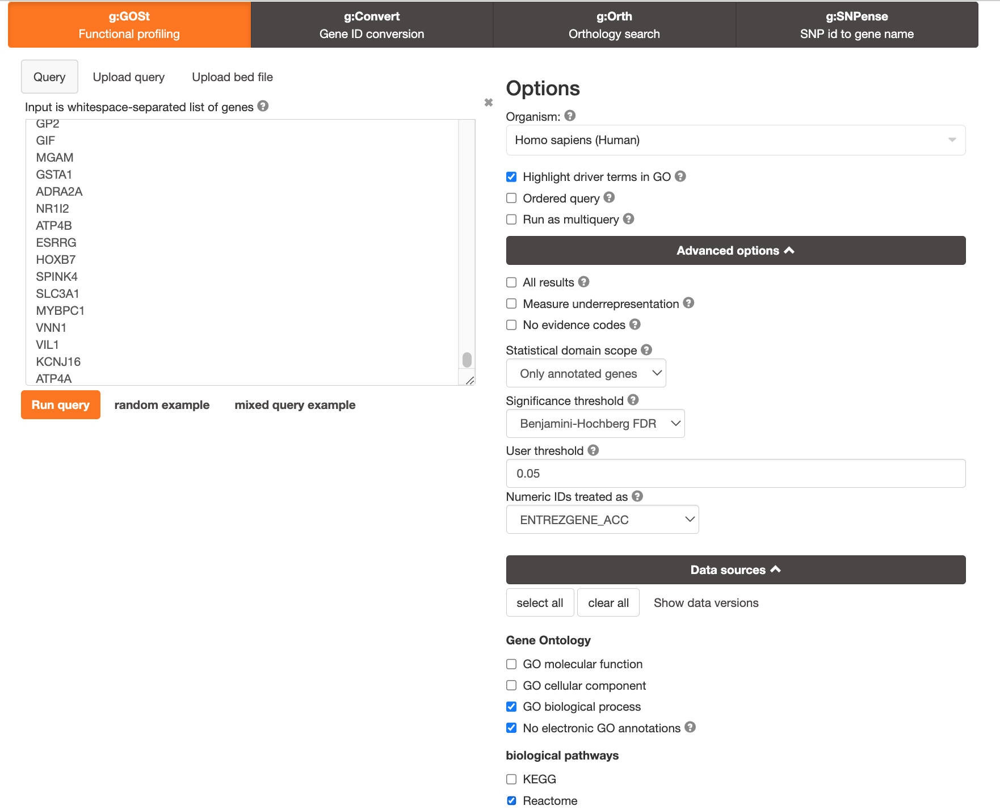
PART 2: save as Generic Enrichment Map output (BE)
Now we have to generate an output from the enrichment analysis and save it in appropriate format for EnrichmentMap. Set the maximum term size to 1000. Scroll down, select the tab for Detailed results, and export the data in Generic EnrichmentMap (GEM) format and save it on your computer. We will need this file to create an enrichment map.
PART 3: save as Generic Enrichment Map output (NE)
Generate and save the Generic EnrichmentMap for genes in NConly_genelist.txt (i.e., delete the old gene list and copy/paste the new gene list in the box). It contains the genes specific of the normal tissue samples. Run g:Profiler with this list using same options as in PART 1 and again save the output as a Generic Enrichment Map (GEM) format. We will need this file for EnrichmentMap.
PART 4: create an enrichment map
Create an enrichment map to visualize the outputs from g:Profiler. Let’s create an EnrichmentMap for the pathways that were enriched by the genes specific of the BE samples and one for the genes specific of the NE samples.
Make sure to rename your g:Profiler results so you know which one is BE and which one is NE.
Open Cytoscape
Go: Apps and click on EnrichmentMap. A ‘Create Enrichment Map’ dialog box appears.
Drag and Drop the 2 g:Profiler result files in the ‘Data Sets:’ window. It populated automatically two data sets on for the BE results and one for the NE results. Make sure that for the 2 datasets the ‘Analysis Type’ is set to ‘Generic/gProfiler/enrichr’ and that the g:Profiler result file has been correctly uploaded in the ‘Enrichments’ field.
Set the ‘FDR q-value cutoff’ to 0.05.
‘Build’ the map.
If successful, you will see a network where each node represents a pathway and edges connect pathways with shared genes. Blue edges connect nodes from dataset1 (BE in my case) and Green edges connect nodes from dataset2 (NE in my case).
In Control Panel and in the ‘EnrichmentMap’ tab, go to ‘Style’ (near the bottom) and change the ‘Chart Data:’ to ‘Color by Data Set’. Now the nodes are colored in blue for dataset1 and in green for dataset2.
Annotate the network using the AutoAnnotate Apps.
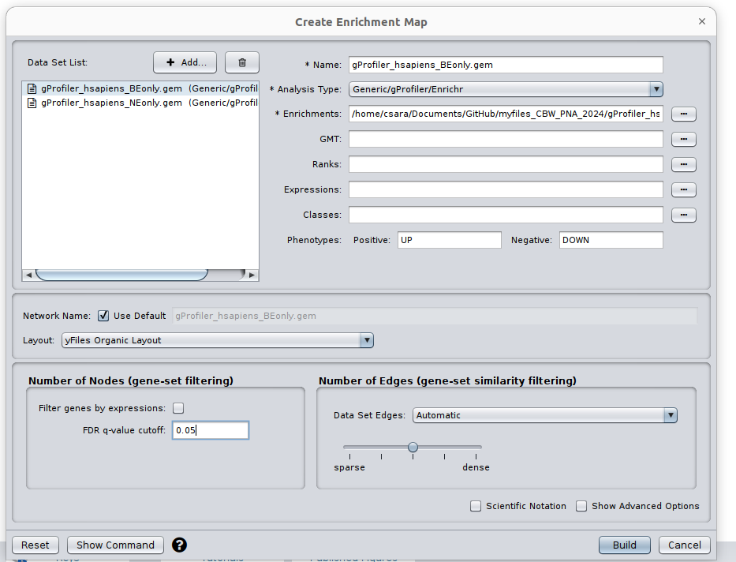
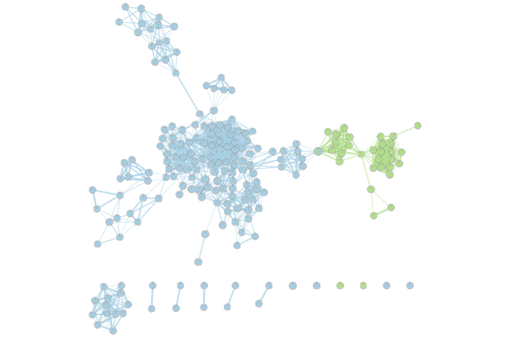
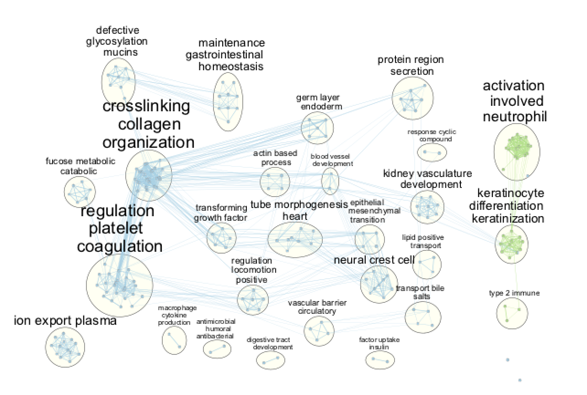
Try different layouts if you’d like. Zoom in and move nodes around to be able to read the labels.
Select a node of your choice. When the node is highlighted, the ‘EM Heat Map’ in ‘Table Panel’ will display the genes in this pathway that are overlapping with your input gene list. A gray square means that the gene is absent in the dataset. Note: you also could create and upload an expression file when you build the enrichment map, and the expression values for each gene in the pathways will be displayed here in the ‘EM Heat Map’.
Click on any edge (the line between nodes). In the ‘Table panel’ (‘EM Heat Map’) you should see a heatmap of all genes both gene-sets connected by this edge have in common.
Select several nodes and edges. EM Heat map will show the union of all genes (Genes: All) or genes in common (Genes:Common) in the selected gene sets.
In Control Panel, go to the EnrichmentMap tab. Change Q-value as well as Edge (Similarity) cutoffs and see how the network changes. Redo the layout. Save the file.
Question What conclusions can you make based on these networks?
Answers g:Profiler
Question: What is the most significant GO:term? What is the p-value for this GO:term
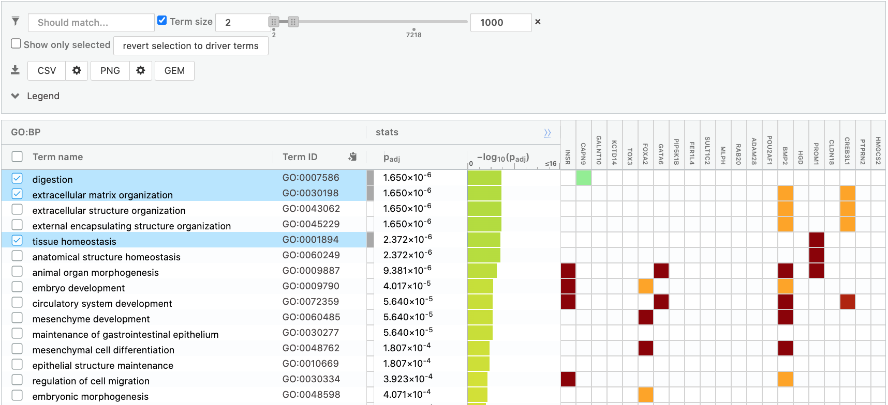 Note: you might get slightly different results compared to the screenshot if the pathway database has been updated.
Answer: digestion
Question: Is this p-value already corrected for multiple testing? What type of correction is used for your current analysis?
Answer: yes, it is already corrected for multiple hypothesis testing. I set the Significance threshold box to “Benjaminin-Hochberg FDR”.
Re-run the analysis with User p-value threshold set to 0.0001.
Question: What has been changed?
Answer: Only the gene-set with adjusted pvalue equal or less than 0.0001 are displayed. The list is reduced compared to the results obtained with the default settings.
Ordered query:
Question: Do you seen any changes in the output in comparison to the analysis of the unordered gene list (PART 2)
Answer Although some terms are similar, their pvalues changed as well as the number of term genes used to calculate the pvalue.
Question What can you conclude about these networks?
Answer The pathways are relevant to the biological model under study. The changes are related to the transformation of the epithelial cells into mesenchymal ones.
PART 5: GSEA (run and create an enrichment map)
Launch GSEA.
Run GSEA using the rank file that has been created from the differential expression test comparing BE vs NE BEvsNE_ranks.rnk and the pathway file Human_GOBP_AllPathways_no_GO_iea_July_01_2020_symbol.gmt.
- open GSEA and first import the files using the “Load data” window: upload the .rnk and .gmt files (the gmt file can be found by clicking the three dots next to ‘Gene sets database’ and clicking on ’Gene matrix (local gmx/gmt) ).
- Go the ‘Run GSEAPreranked’ window and select the correct gmt file and the rank file
- Use 100 permutations for the lab exercise.
For time reasons - Use 100 permutations for the lab exercise but use 1000 for your own data analysis.
- Choose a name for your analysis, a destination folder and run GSEA.
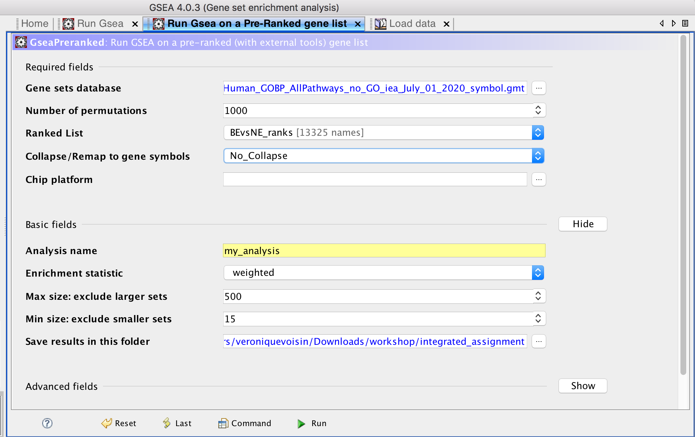
- Create an enrichment map:
Open Cytoscape and the EnrichmentMap app. The enrichment results are 2 excel files called gsea_report_for_na_neg and gsea_report_for_na_pos within the GSEA folder saved on your computer but you should be able to drag and drop the whole GSEA folder and that will populate the required fields automatically.
use an FDR q-value cutoff of 0.01. Upload the expression file BE_vs_NE_expression.txt(right click, save link as).
- Examine the results as you did for the g:Profiler map (e.g move nodes around, use the slide bar to adjust q value to 0.01 and redo the layout, separate blue and red nodes). Save the file. Save an image. Keep your session open for Part 8.
Optional: Autoannotate your map (see below screenshot for results) Note: you may get slightly different results as 100 permutations is not enough to get reliable results. It is better to use 1000 permuatations.
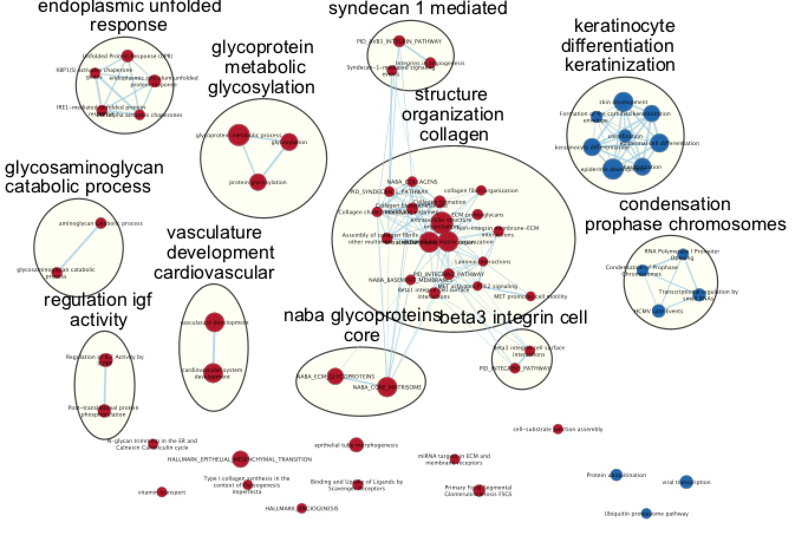
PART 6: iRegulon
- Export the collagen and extracellular matrix genes.
- Using your GSEA map at q-value 0.01, select all nodes from the “collagen interactions organization” module. Go to Table Panel (below the main window), and click on the menu icon (located on the right, 3 lines) and click on ‘Export as TXT’ (all genes). Save the text file under the name ‘collagen_interactions_organization.txt’ or use this file collagen_interactions_organization.txt.
- Import the collagen and extracellular matrix genes as a network.
- In Cytoscape, go to the menu bar and select, File, Import, Network from File…
- Browse your computer and select the ‘collagen_interactions_organization.txt’ file and click on open.
- An ‘Import Network From Table’ window opens and in the table preview, make sure that the ‘Gene’ column is the source node (green dot). Click on ‘OK’. A ‘Confirmation’ dialog box saying that ‘No edges will be created in the network’ opens. Click on ‘Yes’.

- Select nodes and run iRegulon.
- If successful, you should see a grid of gray nodes. If you are zoomed out, they might be very faint. Zoom in until you see them, then zoom out until you see all the nodes and select them all using the mouse.
- Go the Cytoscape menu and select ‘Apps’, ‘iRegulon’, ‘Predict regulators and targets’.
- Click on ‘Submit’.
- Observe the iRegulon results in the Results Panel.
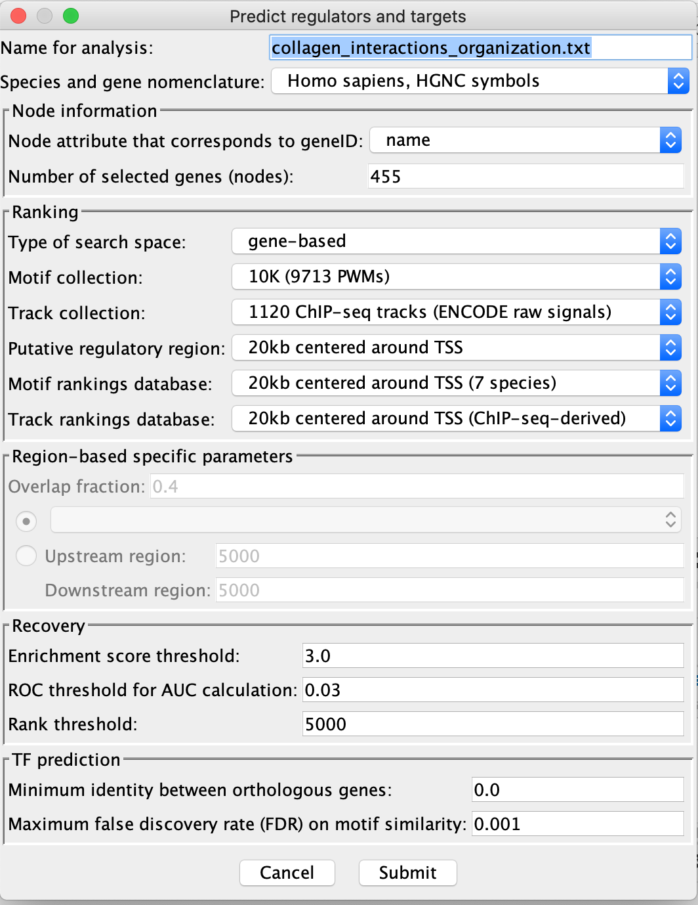

- Add TCF12 and BATF to the network.
- Go to the “Transcription Factors’ tab and click on the first hit (TCF12) to select it.
- Add it to the network using the green ‘+’ button .
- Execute the same steps for the second hit (BATF).
- If successful, you should see targets of TCF12 and BATF linked to these 2 genes by edges (lines).
- Create a subnetwork with all nodes connected to TCF12 and BATF.
- using the mouse select TCF12 and all edges around this node and pressing the shift key, select also BATF and all the edges around this node. All selected edges should now be highlighted in red and the 2 transcription factors in yellow.
- In the Cytoscape menu bar, go to Select, Nodes, Nodes connected by selected edges. More nodes should be selected now and the edges still highlighted in red.
- Select the subnetwork icon (‘New Network from Selection (all edges)’)from the Cytoscape toolbar. If successful, you should have created a subnetwork containing only the targeted genes and the two transcription factors.
- Arrange the network such that we can distinguish genes linked to TCF12 only , linked to BATF only or linked to both transcription factors.
- go to the Cytoscape menu, Layout, Circular Layout, all Nodes. Feel free to use your own strategy.
- Optional. Import the .rnk file that we use for GSEA BEvsNE_ranks.rnk as attribute and color the nodes accordingly to the score values.
- in the menu bar, select, File, Import, Table from File…, select the rank file and click on ‘Open’. A dialog box (‘Import Columns From Table’) opens. Click on ‘Advanced options’ and uncheck ‘Use first line as column names’ and click ‘OK’. Rename Column2 as ‘myscore’. Click ‘OK’.
- in Control Panel, go to Style and in the Node tab, expand the ‘Fill Color’ tab. Retrieve and select the ‘myscore’ column in the ‘column’ fied. Make sure that the ‘Mapping type’ is set to ‘Continuous Mapping’. The score should ranged from -13.16 to 13.16. Adjust the color if necessary.
Screenshot of resulting network:
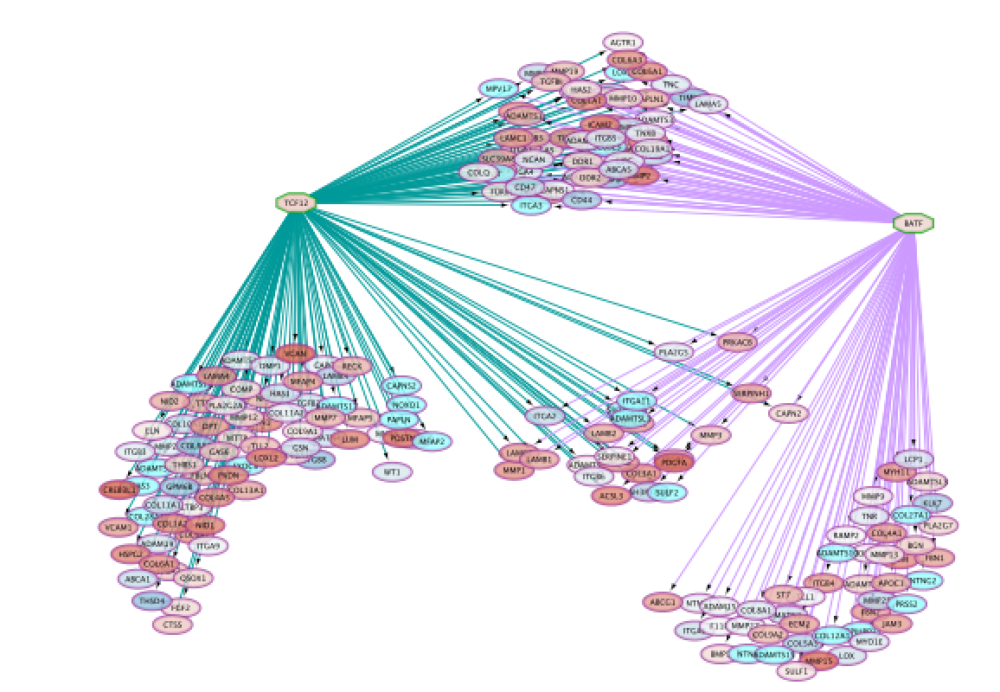
DATASET 2
Stomach cancer or gastric cancer is a cancer developing from the lining of the stomach. The most common cause is infection by the bacteria Helicopter pylori, which accounts for more than 60% of cases. Certain types of ‘H. pylori’ have greater risks than others. Other common causes include eating pickled vegetables and smoking.
MutSig - is a mutation signal processing tool created by the Broad Institute. It estimates the significance of the gene mutation rate based on abundances of the mutations, clustering of the mutations in hotspots and conservation of the mutated positions.
The gene list for this assignment is the output from MutSig run based on Stomach Adenocarcinoma somatic mutations found in ~300 samples. It is publicly available through TCGA portal.
File provided: STAD_MutSig.txt
Goal: familiarize yourself with ReactomeFI and GeneMANIA.
PART 1: ReactomeFI
Create a network using ReactomeFI.
- Open Cytoscape.
- Choose App -> Reactome FI -> Gene set/mutation analysis
- Upload STAD_MutSig.txt and built a network without linkers:
Note: Choose 2019 to get results comparable to those shown below but use the most uptodate version when analyzing your own data!
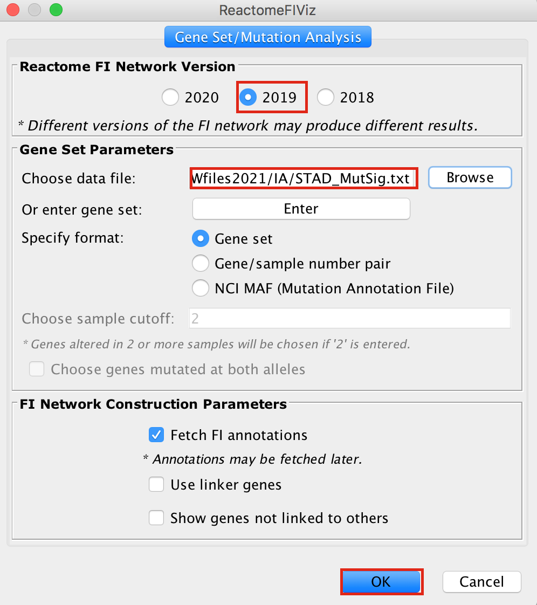
The network may look slightly different compared to below screenshot if the underlying database has been updated since the screenshot was taken
upload your file or copy and paste the gene names in the gene set field.
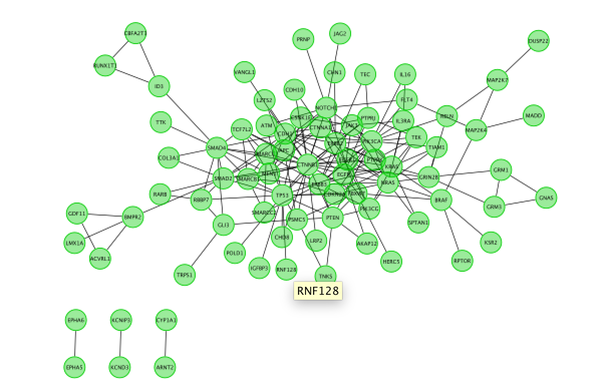
Fetch FI annotation (Hint: right click on a blank space, Reactome FI, Fetch FI Annotations). You should see arrows (directed graph).
Run Pathway enrichment (Hint: right click on the network panel and select Reactome FI > Analyze network functions > Pathway enrichment). Question What is the pathway with the lowest (best) FDR?
Do a subnetwork of Endometrial cancer (K).
select the pathway in the table, that should highlight the genes in yellow. Use the subnetwork icon on the Cytoscape tool bar to create it (“New network from selection”).


- Go back to the full network (in the Control panel on the left, click the highest level of ‘STAD_MutSig’). Cluster the network and perform pathway enrichment on the network. Questions How many clusters did the analysis retrieve? What is the FDR value of the most significant pathway of module 0

Answers REACTOME FI
Pathway enrichment on the whole network.
Question What is the pathway with the lowest (best) FDR?
Answer The pathway with the lowest FDR is Endometrial cancer (K) .

Cluster the network and perform pathway enrichment on the network.
Question How many clusters did the analysis retrieve?
Answer The analysis retrieved 9 clusters named module 0 to module 8.
Question What is the FDR value of the most significant pathway of module 0?
Answer FLT3 signaling (first row)

PART 2: GeneMANIA
Use the same mutation data STAD_MutSig.txt to create a network using GeneMANIA in order to visualize which genes are known to physically interact with each other.
- Create the network
- In Cytoscape, go to Control Panel and locate and select the Network Tab in the Control Panel
- Make sure the GeneMANIA search provider is selected in the Network Search Bar.
- Choose Homo sapiens from the list of supported organisms
- Copy and paste the gene list STAD_MutSig.txt in the field.
- Locate the “More Options…” button at the right side of the field and only select ‘Physical interactions’ as ‘Interaction Networks’ and set 0 to the ‘Max Resultant Genes’.
- Click the “Search Network” button
The network may look slightly different compared to below screenshot if the underlying database has been updated since the screenshot was taken.

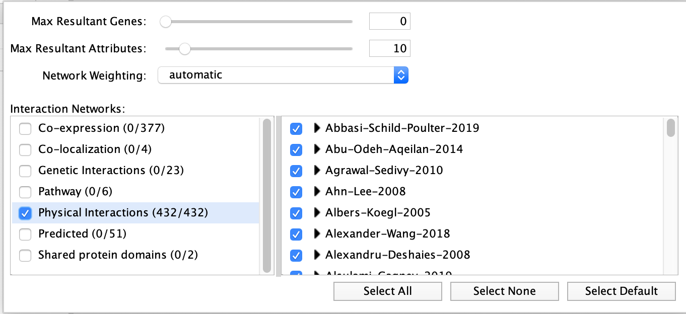
Screenshot of the output:

the screenshot only includes nodes connected to other nodes. Singletons are not part of the screenshot.
- Explore the functions in the GeneMANIA Results Panel.
- Go to ‘Results Panel’ located at the right side and select the GeneMANIA tab. Choose the ‘Functions’ tab to visualize the list of enriched GO gene-sets. Question Can you see which genes are included in these gene-sets? Hint: you can click on a function of your choice to see corresponding nodes highlighted in yellow.
- Improve the visual style:
- Color nodes by function.
- In Control Panel, select the ‘Style’ tab and go to the ‘Node’ panel.
- Expand the ‘Fill Color’ field using the down arrow and set ‘Column’ to ‘annotation name’ which is the top field (/! not ‘annotations’). Select one annotation of your choice by clicking on the white space and choose a color. Repeat for 2 more annotation names. For the current example, we have selected “transmembrane receptor protein kinase activity”, “regulation of protein kinase” , “signaling cell-matrix adhesion”. Hint: the annotation names are displayed in alphabetical order.
- Edge width (optional). In Control Panel, go to the ‘Edge’ panel. Expand the ‘Width’ field using the down arrow. A grah is displayed. Double click on the graph to select it and move the left and right handles up. Look at the changes on the network (suggested values are approximately 3 for the left handle and approximately 18 for the right handle). Click on OK.
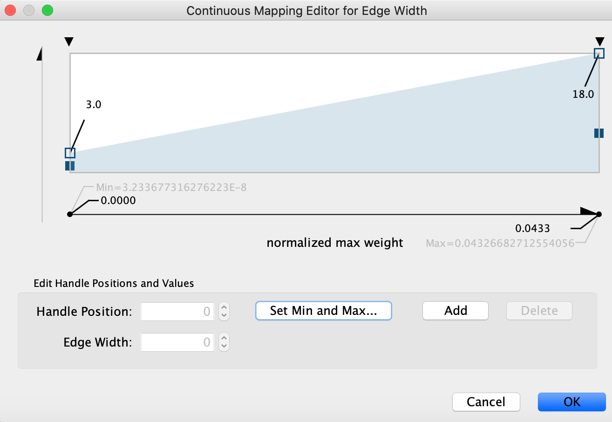

- Create a subnetwork containing CTNNB1 and connected genes
- Locate CTNNB1, use the “First neighbors of selected nodes” icon (has the shape of 2 houses) in the toolbar to highlight genes connected to CTNNB1
- Create a subnetwork using the approriate icon.
- How many nodes do contain this subnetwork? Hint: Go to Control Panel, Network and look at the number of nodes corresponding to your subnetwork.

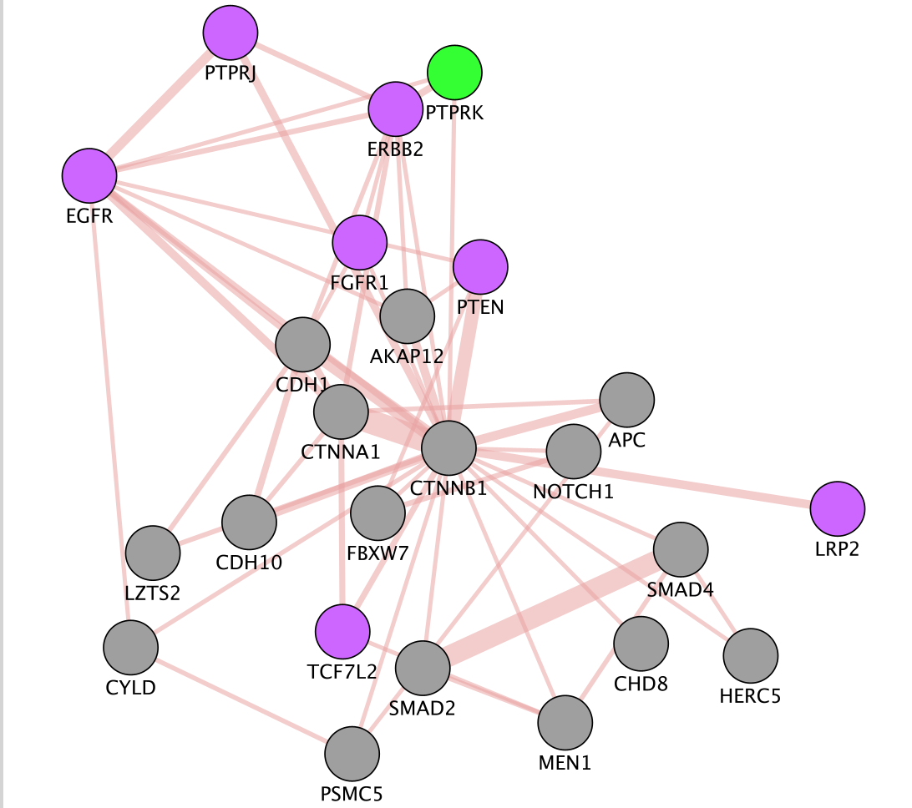
Answers GeneMANIA
Question What is the number of nodes in the CTNBB1 network.
Answer There are 24 nodes.
Optional part 1: Launch a GeneMANIA search using the “Local Search” option (for big networks)
- In Cytoscape , open the GeneMANIA app and select ‘GeneMANIA Local Search’. Copy and paste the MutSig genes in the ‘Genes of Interest’ field.
- In Advanced Options, select only ‘Physical interactions’ as ‘Interaction Networks’ and set 0 in the “Find the top” 0 “related genes”.
- Click on ‘Start’.
- If you use it for the first time and you haven’t installed data as it was said in the installation instructions, only install “CORE” data as the full data may take 1 hour to download.
There are 2 ways to perform a GeneMANIA search. The first option using the Network search bar from the Control Panel is doing a seach by calling and connecting the GeneMANIA server (same as the website:https://genemania.org/). The other option as just showed here is to select GeneMANIA from the Apps menu and click on ‘Local Search…’. This option will use a database that is installed locally on your computer when you first use GeneMANIA. As it does not imply any connection to the server, this option is the best choice for large query, e.g input gene list size greater than 100 or resulting network containing more than 200 nodes.
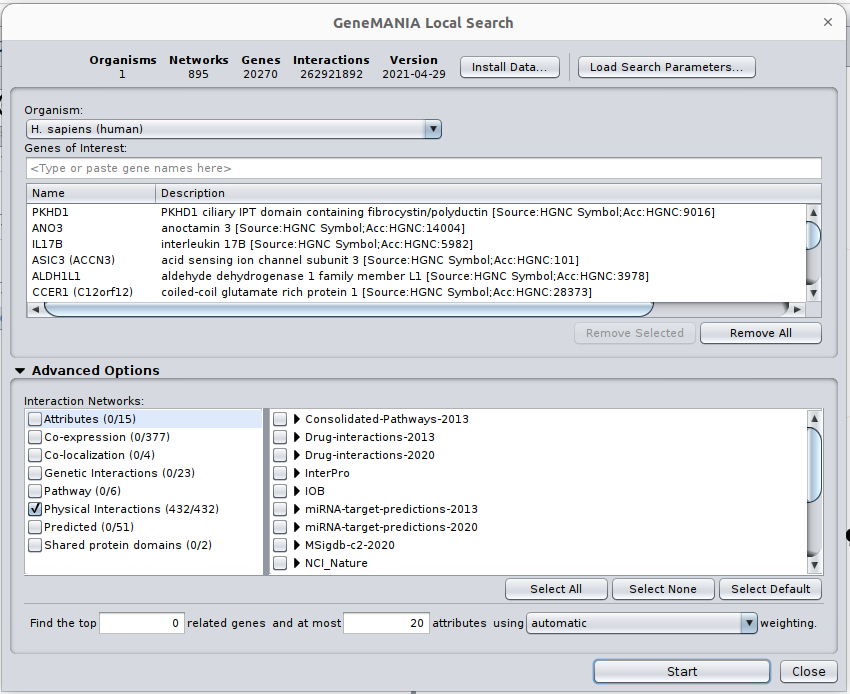
The network and predicted functions should be the same as the ones obtained in part 2. Feel free to explore the network or follow the same steps as part 2.
Optional part 2: Use STRING from the Network Search Bar
STRING (Search Tool for the Retrieval of Interacting Genes/Proteins) is a biological database and web resource of known and predicted protein–protein interactions.
- In Cytoscape, go to Control Panel and locate and select the Network Tab in the Control Panel
- Make sure ‘STRING protein query’ is selected in the Network Search Bar.
- Type CTNNB1 in the search field.
- Click the “Search Network” button
- Explore the network!


–
Congratulations! You have reached the end of the integrated assignment.